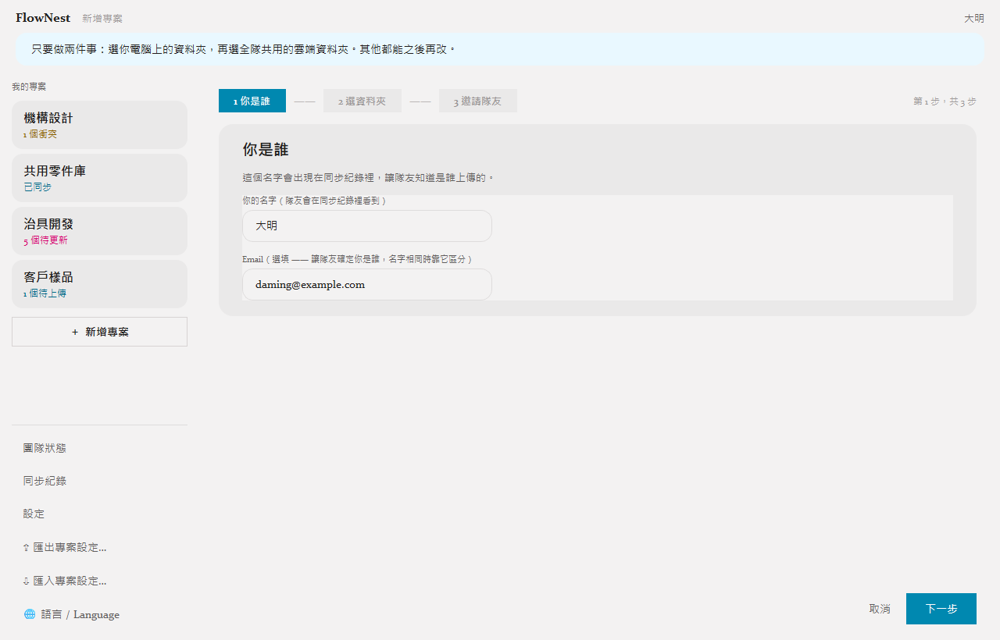
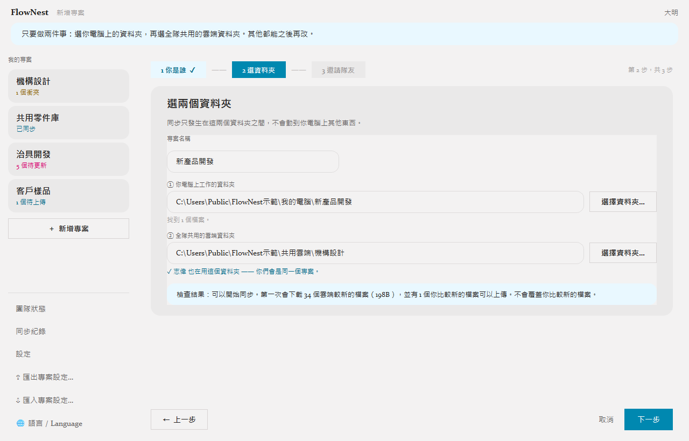
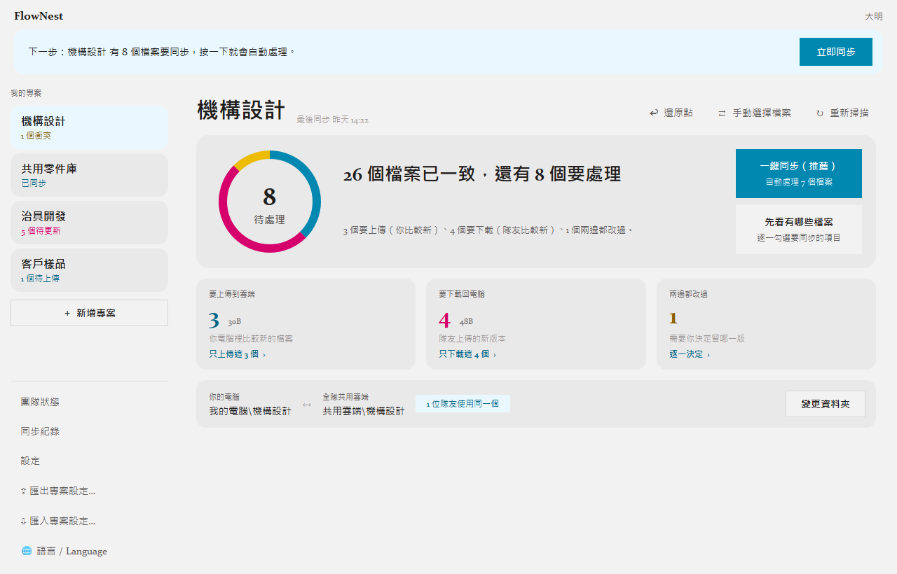
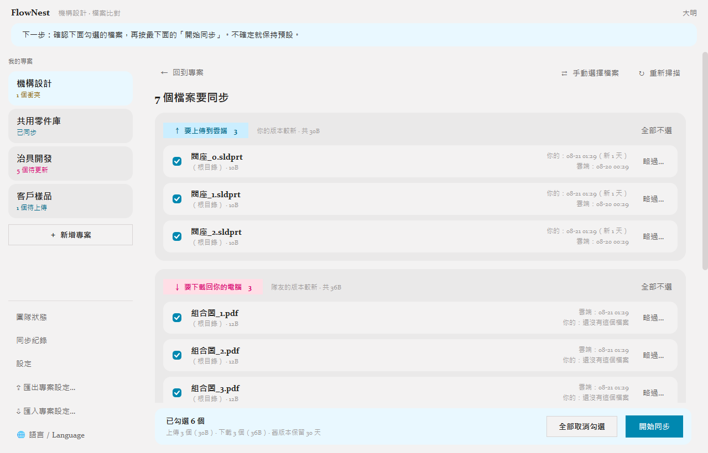
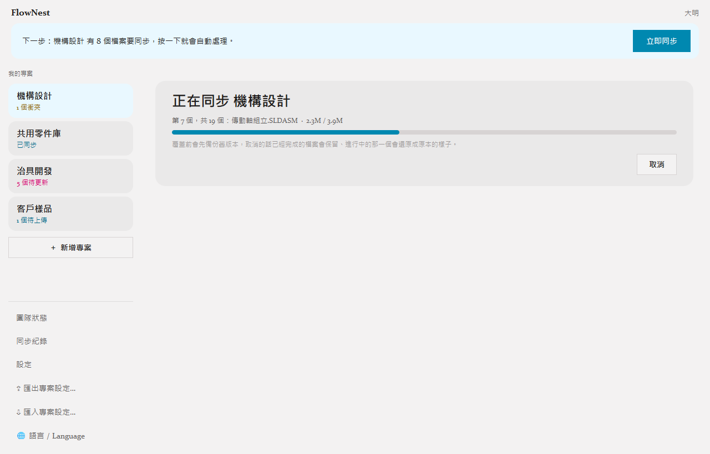
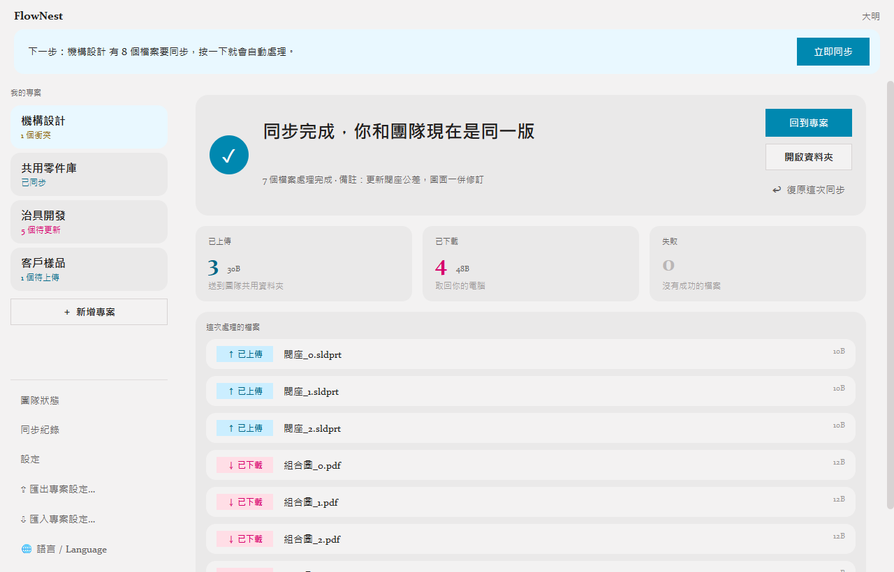
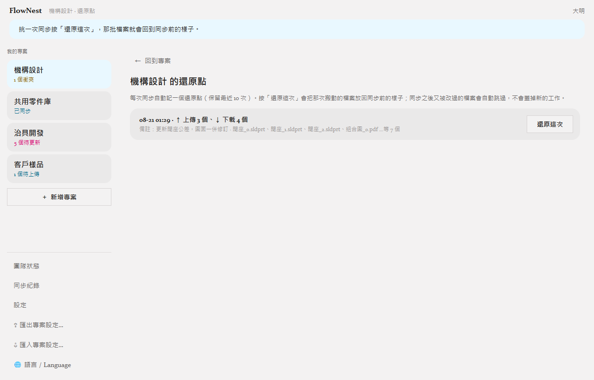
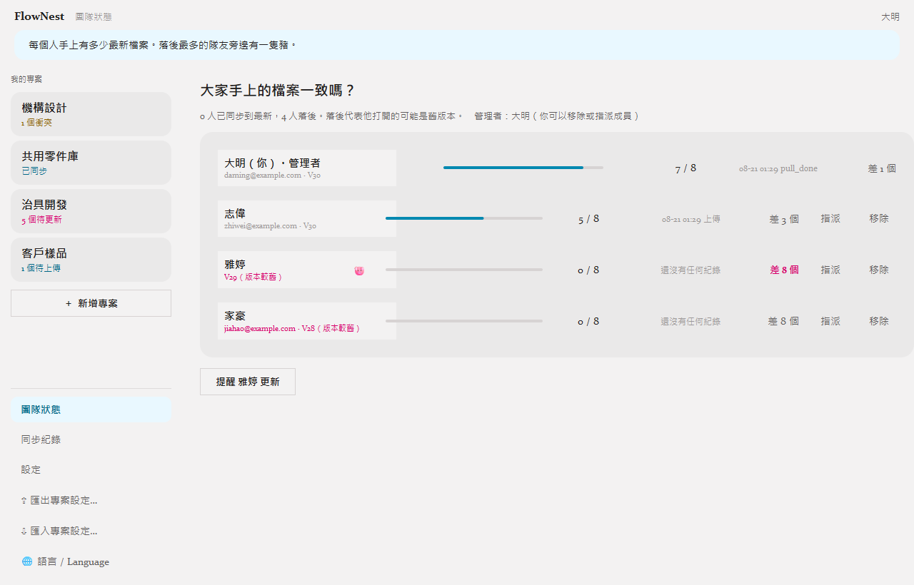

FLOWNEST · 使用方法
從安裝到第一次同步。
這一頁整理日常會用到的操作。完整功能請參考使用說明書（PDF）。
開始前
- 電腦：Windows 10 或 11。免安裝，不需要系統管理員權限。
- 共用資料夾：一個團隊共用的 Google Drive 資料夾，每位成員的電腦都能在檔案總管看到它（例如透過 Google Drive 電腦版）。
- 序號：每台電腦一組，格式為
FLOW-XXXXX-XXXXX-XXXXX-XXXXX，隨試用通知信寄出。還沒有序號請先申請試用。
安裝與啟用
- 解壓縮試用包，點兩下
FlowNest_RV1.exe。第一次啟動需要 5–10 秒。 - 若出現 SmartScreen 警告，選「其他資訊」→「仍要執行」。
- 輸入產品序號。可以整段貼上，連字號與大小寫不拘，只需輸入一次。
序號綁定這台電腦。換電腦時，在新電腦輸入同一組序號即可。試用序號到期前兩週，畫面上會提醒。
關閉視窗只會縮到右下角系統匣，程式會繼續監看，隊友上傳時發出通知。要完全結束，請在系統匣圖示按右鍵 → Quit。
建立專案
一個專案＝你電腦上的工作資料夾＋全隊共用的雲端資料夾。點左側「＋ 新增專案」，照三個步驟走：
- 你是誰：輸入名字（隊友在紀錄裡看到的稱呼）與 Email（選填）。
- 選兩個資料夾：先選本機工作資料夾，再選共用雲端資料夾。畫面會即時告訴你找到幾個檔案、哪些隊友已經在用，以及第一次同步會發生什麼。
- 邀請隊友：把共用資料夾的位置傳給隊友，他們新增專案時選同一個共用資料夾即可。各自的本機資料夾可以不同。
按「完成」之前，不會寫入任何設定，也不會搬動任何檔案。


看懂主畫面
FlowNest 依檔案大小與修改時間比對兩邊，每個檔案歸成四種狀態之一：
- ↑ 要上傳
你的版本較新，或團隊還沒有這個檔案。
- ↓ 要下載
隊友的版本較新，或你還沒有這個檔案。
- ⚠ 兩邊都改過
需要你決定，工具不會自動處理。
- ✓ 已一致
兩邊是同一版。
畫面最上方的引導列，永遠用一句話告訴你下一步做什麼。左側是你的專案，每張卡片顯示待處理的數量。

同步檔案
依你想要的控制程度，有三種方式：
- 一鍵同步：日常建議。所有差異自動雙向處理，兩邊都改過的檔案除外。
- 只上傳／只下載：一次只處理一個方向，方便中間檢查。
- 逐檔勾選：按「先看有哪些檔案」，在比對頁逐一確認後再同步。
含上傳的同步會先請你寫一段「上傳備註」，說明這次改了什麼，隊友在同步紀錄裡看得到。純下載則會先列出將下載的檔案讓你確認。
傳輸途中可以隨時取消。已完成的檔案保留，進行中的檔案還原原狀，不會留下寫到一半的檔案。


兩邊都改過
隊友上傳了新版，你沒有下載，又在自己的舊版上繼續修改，就會出現「⚠ 兩邊都改過」。這種情況沒有安全的自動答案，FlowNest 會列出雙方的修改時間、相差多久、檔案大小與上傳者，由你選擇：
- 保留我的版本：上傳你的版本，團隊的舊版先備份。
- 取得團隊版本：下載團隊的版本，你的舊版先備份。
- 稍後處理：先不動。
做完決定後按「套用這些決定」。無論選哪一邊，被覆蓋的版本都會保留 30 天。

按錯了怎麼辦
剛同步完：結果頁右側的「↩ 復原這次同步」可以當場整批撤銷。
之後才發現：每次同步都會自動記一個還原點，每個專案保留最近 10 次。從專案頁右上「↩ 還原點」挑一次，按「還原這次」：
- 那次新增的檔案會被移除（移除前再備份一次）。
- 那次覆蓋的檔案從備份精準還原。
- 同步之後又被修改過的檔案自動跳過，不會蓋掉之後的新工作。
只想讓單一檔案回到舊版：在「手動選擇檔案」裡，從該檔的版本歷史挑一版還原。備份保留 30 天。


團隊狀態
左下「團隊狀態」列出用過這個專案的每一位成員：名字、Email、使用的版本、最後上線時間，以及已同步的進度。成員名冊自動維護，不需要任何人手動登錄。
第一位使用專案的人是管理者，可以移除成員或把管理者交給別人。落後最多的隊友旁邊會出現一隻小豬，按「提醒」可以複製一段提醒訊息。
名冊管理的是「顯示與名單」，不是 Google Drive 的存取權限。要讓某人完全無法存取，請同時在 Google Drive 收回共用資料夾的權限。

完整說明書
還原點、手動選擇檔案、同步紀錄、設定、匯出與匯入等完整功能，請參考使用說明書。
使用上有問題，可以從程式側邊欄的「💬 回報問題…」送出，或來信 austin@speesso.com。